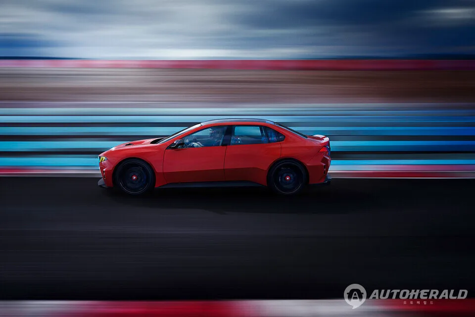
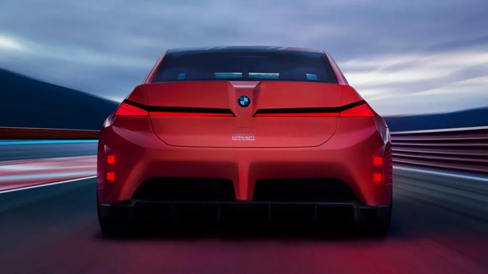
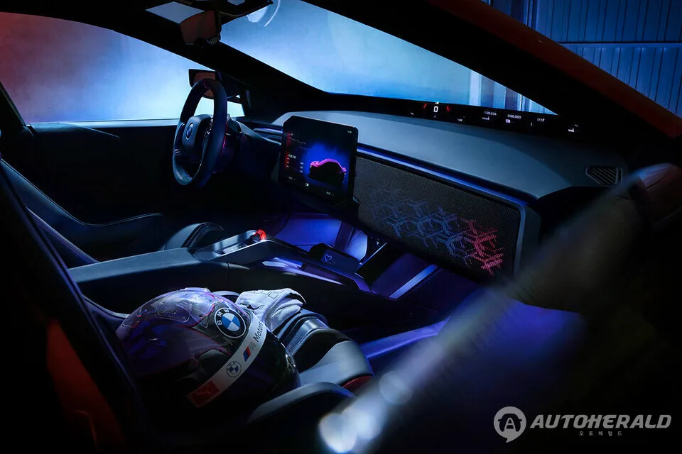
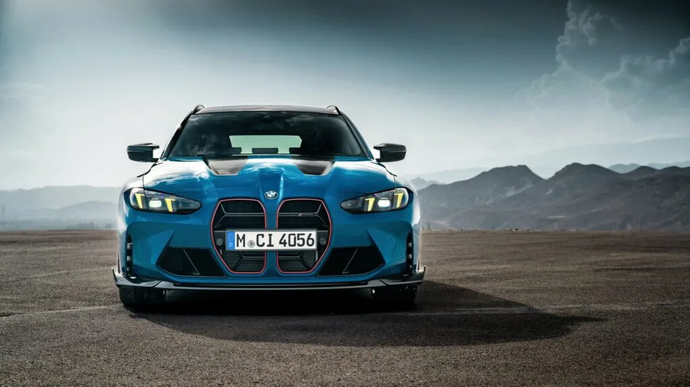

▲ BMW M 콘셉트 노이어 클라쎄. 차세대 전기 M3의 방향성을 보여주는 모델이다
고성능 브랜드의 전동화는 대체로 두 가지 문장 중 하나로 설명됩니다. "규제 때문에 어쩔 수 없다" 또는 "시대의 흐름이다".
BMW M이 내놓은 문장은 둘 다 아닙니다. 프랑크 판 밀 BMW M 최고경영자는 전기 M3 개발에 대해 "해야 하기 때문에 만드는 것이 아니라, 이런 방식으로 더 빠르고 더 나은 자동차를 만들 수 있다고 확신하기 때문"이라고 밝혔습니다.
1. "해야 해서"가 아니라 "할 수 있어서"
판 밀 CEO의 발언에는 조건이 붙어 있습니다. 그는 전기 M 개발에서 "적절한 시점이 중요하다"며, "우리가 원하는 방식으로 100% 구현할 수 있을 때만 가능하다"고 강조했습니다.

▲ M 콘셉트 노이어 클라쎄. 전기 M3의 형태를 미리 보여준다 ⓒ BMW
이 조건이 지금까지 전기 M이 나오지 않았던 이유입니다. 기존 M 모델의 엔진을 전기모터로 갈아 끼우는 방식으로는 M 특유의 주행 감각을 만들 수 없다고 본 것입니다.
M이 파는 것은 출력이 아니라 감각입니다. 가속 수치만 놓고 보면 전기차가 유리한 지 오래됐습니다. 문제는 그 힘이 어떻게 전달되고 운전자가 무엇을 느끼느냐였습니다.

▲ 콘셉트카의 후면. 양산 모델이 상당 부분을 이어받을 것으로 전망된다 ⓒ BMW
2. 쿼드 모터가 해결한 것
기술적 조건이 갖춰졌다는 판단의 근거가 쿼드 모터입니다. 차세대 전기 M3에는 네 개의 전기모터를 각각 독립적으로 제어하는 시스템이 들어갑니다.
여기에 세 가지가 더 붙습니다. 정교한 토크 벡터링, 중앙 통합 제어장치, 그리고 BMW M 전용 소프트웨어입니다. 이 조합으로 각 바퀴에 전달되는 구동력을 실시간으로 제어합니다.

▲ 콘셉트카 실내. 제어 소프트웨어가 주행 감각을 결정하는 구조다 ⓒ BMW
📍 바퀴 네 개를 따로 돌린다는 것
내연기관 사륜구동은 엔진 하나의 힘을 차동장치로 나눠 보냅니다. 배분 비율을 바꿀 수는 있어도 각 바퀴를 완전히 독립적으로 다루기는 어렵습니다.
모터가 바퀴마다 하나씩 있으면 이야기가 달라집니다. 바깥쪽 바퀴에는 밀고 안쪽 바퀴에는 제동을 거는 식의 제어가 기계적 연결 없이 가능해집니다. 코너에서 차를 돌려 넣는 감각을 소프트웨어로 설계할 수 있다는 뜻입니다.
판 밀 CEO가 정리한 조건은 이렇습니다. 고성능 전기 M을 만들려면 네 개의 전기모터와 토크 벡터링, 개별 제어, 중앙 제어장치, 자체 소프트웨어가 모두 필요하고, 무엇보다 완성된 차가 운전자에게 기존 모델과 마찬가지로 "M다운" 감각을 전달해야 한다는 것입니다.
3. 노이어 클라쎄가 전제였다
이 모든 것이 가능해진 배경에 플랫폼이 있습니다. BMW의 차세대 전기차 전용 플랫폼 노이어 클라쎄(Neue Klasse)입니다.

▲ 노이어 클라쎄. 처음부터 전기차로 설계된 플랫폼이다 ⓒ BMW
차이는 설계 순서입니다. 기존 플랫폼을 전기차에 맞게 고치는 방식이 아니라, 배터리와 전기모터를 처음부터 고려해 만든 구조입니다. 모터를 네 개 배치하고 배터리를 낮게 까는 설계가 개조로는 어렵습니다.
M 콘셉트 노이어 클라쎄가 그 결과물의 예고편입니다. 일반 i3를 기반으로 차체를 넓힌 휠 아치와 전용 범퍼, 휠, 보닛을 적용했습니다. 양산 모델도 콘셉트카의 주요 디자인 요소를 상당 부분 이어받을 것으로 전망됩니다.
4. 그런데 엔진도 그대로 간다
이 발표에서 가장 눈에 띄는 대목은 전기차가 아니라 엔진입니다. BMW M은 순수전기차를 앞세워 기존 내연기관 고성능차를 대체할 계획이 없습니다.

▲ 현행 M4. 6기통과 8기통 엔진은 차세대에서도 유지된다 ⓒ BMW
차세대 M3에서도 전기차와 내연기관 모델을 나란히 운영하고, 6기통과 8기통 엔진 역시 계속 유지합니다. 같은 이름의 차를 두 가지 동력으로 파는 구조입니다.

▲ 현행 M3 컴페티션. 내연기관 라인은 단종 계획이 언급되지 않았다 ⓒ BMW
판 밀 CEO는 이 전략을 한 문장으로 설명했습니다. "우리는 고객이 무엇을 타야 하는지 결정하지 않는다." BMW M은 좋아할 만한 차를 만들고, 전기차와 내연기관 중 무엇을 고를지는 고객에게 맡기겠다는 것입니다.
| 구분 | 전기 M3 | 내연기관 M3 |
|---|---|---|
| 플랫폼 | 노이어 클라쎄(전기 전용) | 기존 구조 유지 |
| 구동 | 쿼드 모터 개별 제어 | 6기통 · 8기통 엔진 |
| 제어 | 토크 벡터링 + 중앙 통합 제어 + M 전용 SW | 기계식 구동계 기반 |
| 위치 | 추가되는 선택지 | 대체되지 않음 |
5. 이 선택이 갖는 무게
두 파워트레인을 병행하는 것은 비용이 큰 결정입니다. 개발도 생산도 두 갈래로 가야 하고, 규모의 경제는 그만큼 나빠집니다. 많은 브랜드가 한쪽으로 정리하는 이유가 여기 있습니다.
그럼에도 이 길을 택한 배경에는 시장 상황이 있습니다. 전동화 속도가 지역마다 다르고, 고성능차 구매층은 특히 내연기관에 대한 선호가 뚜렷합니다. 한쪽을 접었다가 수요가 남아 있으면 그 자리는 경쟁사가 가져갑니다.
국내 시장에도 의미가 있습니다. BMW는 한국에서 M 라인업 판매 비중이 높은 편입니다. 전기 M3가 들어오더라도 내연기관 M3가 함께 남는다면, 구매를 미룰 이유가 하나 줄어듭니다.
정리하면 이렇습니다. BMW M은 전동화를 대체가 아니라 추가로 정의했습니다. 이 정의가 유지되는 한, "언제까지 엔진을 살 수 있느냐"는 질문의 답은 당분간 열려 있습니다.